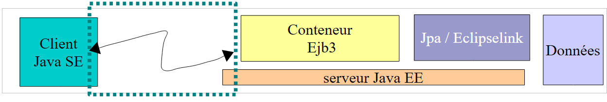
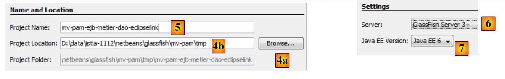
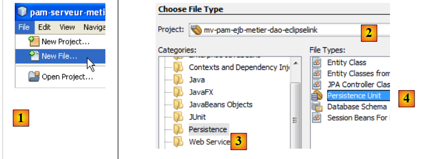
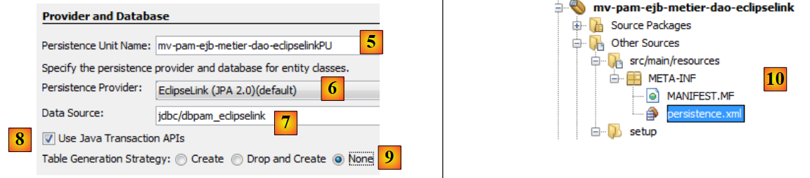
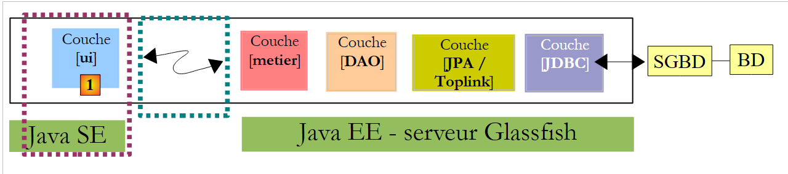

7. Version 3: Portierung der Anwendung PAM auf einen Glassfish-Anwendungsserver
Es ist vorgesehen, die EJB der Schichten [metier] und [DAO] der Architektur OpenEJB / EclipseLink in den Container eines Glassfish-Anwendungsservers zu stellen.
Die aktuelle Implementierung mit OpenEJB / EclipseLink
 |
Oben nutzt die Schicht [ui] die Remote-Schnittstelle der Schicht [metier].
Wir haben zwei Ausführungskontexte getestet: local und distant. Im letzteren Modus war die Schicht [ui] ein Client der Schicht [metier], die durch EJB implementiert wurde. Um im Client-Server-Modus zu arbeiten, bei dem Client und Server in zwei verschiedenen JVM-Instanzen ausgeführt werden, werden wir die Schichten [metier, DAO, jpa] auf dem Java-Server EE Glassfish platzieren. Dieser Server ist im Lieferumfang von NetBeans enthalten.
Die mit dem Glassfish-Server zu erstellende Implementierung
 |
- Die Schicht [ui] wird in einer Java-Umgebung SE (Standard Edition) ausgeführt.
- Die [metier, DAO, JPA]-Ebenen werden in einer Java-Umgebung (EE, Enterprise Edition) auf einem GlassFish v3-Server ausgeführt.
- Der Client kommuniziert mit dem Server über ein TCP/IP-Netzwerk. Der Netzwerkverkehr ist für den Entwickler transparent, allerdings muss er sich dennoch bewusst sein, dass Client und Server zur Kommunikation serialisierte Objekte und keine Objektreferenzen austauschen. Das für diesen Austausch verwendete Netzwerkprotokoll heißt RMI (Remote Method Invocation) und kann ausschließlich zwischen zwei Java-Anwendungen verwendet werden.
- Die auf dem Glassfish-Server verwendete Implementierung JPA lautet EclipseLink.
7.1. Der Serverteil „ “ der Client-Server-Anwendung PAM
7.1.1. Die Architektur der Anwendung
Wir betrachten hier den Serverteil, der vom Container EJB3 des Glassfish-Servers gehostet wird:
 |
Es geht darum, das, was bereits mit dem Container OpenEJB erstellt und getestet wurde, auf den Glassfish-Server zu portieren. Darin liegt der Vorteil von OpenEJB und generell der eingebetteten EJB-Container: Sie ermöglichen es uns, die Anwendung in einer vereinfachten Laufzeitumgebung zu testen. Sobald die Anwendung getestet wurde, muss sie nur noch auf einen Zielserver portiert werden, in diesem Fall den Glassfish-Server.
7.1.1.1. Das NetBeans-Projekt
Beginnen wir damit, ein neues NetBeans-Projekt anzulegen:
 |
- in [1], neues Projekt
- in [2], wählen Sie die Kategorie Maven und in [3] den Typ EJB „Modul“. Es geht nämlich darum, ein Projekt zu erstellen, das von einem EJB-Container, nämlich dem des Glassfish-Servers, gehostet und ausgeführt wird.
 |
- Wählen Sie über die Schaltfläche [4a] den übergeordneten Ordner des Projektordners aus oder geben Sie dessen Namen direkt in das Feld [4b] ein.
- In [5] geben Sie dem Projekt einen Namen
- Wählen Sie in [6] den Anwendungsserver aus, auf dem das Projekt ausgeführt werden soll. Der hier ausgewählte Server ist einer der auf der Registerkarte [Runtime / Servers] angezeigten Server, in diesem Fall Glassfish v3.
- in [7] die Java-Version auswählen (EE).
 |
- In [1] das neue Projekt. Es unterscheidet sich in einigen Punkten von einem klassischen Java-Projekt:
- Es wird automatisch ein Zweig [Other Sources] [2] erstellt. Dieser enthält insbesondere die Datei [persistence.xml], die die Schicht JPA konfiguriert.
- wenn man das Projekt erstellt (Build), erscheint eine Abhängigkeit [javaee-api-6.0] zu [3]. Sie ist vom Typ provided, da sie zur Laufzeit vom Glassfish-Container EJB bereitgestellt wird.
7.1.1.2. Konfiguration der Persistenzschicht
Unter der Konfiguration der Persistenzschicht verstehen wir das Erstellen der Datei „[persistence.xml]“, die Folgendes definiert:
- die zu verwendende Implementierung JPA
- die Definition der von der Schicht JPA genutzten Datenquelle. Dabei handelt es sich um eine vom Glassfish-Server verwaltete Quelle JDBC.
 |
Man kann wie folgt vorgehen. Zunächst erstellt man auf der Registerkarte [Runtime / Databases] eine Verbindung zur Datenbank MySQL5 / dbpam_eclipselink:
 |
Anschließend können wir mit der Erstellung der Ressource „ “ JDBC fortfahren, die vom Modul EJB verwendet wird:
 |
- In [1] eine neue Datei erstellen – dabei sicherstellen, dass das Projekt EJB ausgewählt ist, bevor dieser Vorgang durchgeführt wird
- in [2], das Projekt EJB
- in [3]: Wählen Sie die Kategorie [Glassfish] aus
- in [4] möchte man eine Ressource JDBC anlegen
 |
- in [5] geben Sie an, dass die Ressource JDBC einen neuen Verbindungspool verwenden soll. Zur Erinnerung: Ein Verbindungspool ist ein Pool offener Verbindungen, der dazu dient, den Datenaustausch zwischen der Anwendung und der Datenbank zu beschleunigen.
- In [6] vergeben Sie der erstellten Ressource JDBC den Namen JNDI. Dieser Name kann beliebig gewählt werden, hat jedoch häufig die Form jdbc/nom. Dieser Name „JNDI“ wird in der Datei „[persistence.xml]“ verwendet, um die Datenquelle zu bezeichnen, die die Implementierung „JPA“ verwenden soll.
- Geben Sie in [7] einen beliebigen Namen für den anzulegenen Verbindungspool ein
- Wählen Sie in der Dropdown-Liste „[8]“ die zuvor erstellte Verbindung „JDBC“ aus, die auf der Basis von „MySQL“ / „dbpam_eclipselink“ angelegt wurde.
- In [9] wird eine Übersicht über die Eigenschaften des Verbindungspools angezeigt – hier wird nichts geändert
 |
- in [10] können mehrere Eigenschaften des Verbindungspools festgelegt werden – die Standardwerte werden beibehalten
- in [11], nach Abschluss des Assistenten zur Erstellung einer Ressource JDBC für das Modul EJB, wurde im Zweig [Other Sources] eine Datei [glassfish-resources.xml] erstellt. Der Inhalt dieser Datei lautet wie folgt:
<?xml version="1.0" encoding="UTF-8"?>
<!DOCTYPE resources PUBLIC "-//GlassFish.org//DTD GlassFish Application Server 3.1 Resource Definitions//EN" "http://glassfish.org/dtds/glassfish-resources_1_5.dtd">
<resources>
<jdbc-resource enabled="true" jndi-name="jdbc/dbpam_eclipselink" object-type="user" pool-name="dbpamEclipselinkConnectionPool">
<description/>
</jdbc-resource>
<jdbc-connection-pool allow-non-component-callers="false" associate-with-thread="false" connection-creation-retry-attempts="0" connection-creation-retry-interval-in-seconds="10" connection-leak-reclaim="false" connection-leak-timeout-in-seconds="0" connection-validation-method="auto-commit" datasource-classname="com.mysql.jdbc.jdbc2.optional.MysqlDataSource" fail-all-connections="false" idle-timeout-in-seconds="300" is-connection-validation-required="false" is-isolation-level-guaranteed="true" lazy-connection-association="false" lazy-connection-enlistment="false" match-connections="false" max-connection-usage-count="0" max-pool-size="32" max-wait-time-in-millis="60000" name="dbpamEclipselinkConnectionPool" non-transactional-connections="false" pool-resize-quantity="2" res-type="javax.sql.DataSource" statement-timeout-in-seconds="-1" steady-pool-size="8" validate-atmost-once-period-in-seconds="0" wrap-jdbc-objects="false">
<property name="URL" value="jdbc:mysql://localhost:3306/dbpam_eclipselink"/>
<property name="User" value="root"/>
<property name="Password" value=""/>
</jdbc-connection-pool>
</resources>
Die Datei [glassfish-resources.xml] ist eine XML-Datei, die alle vom Assistenten erfassten Daten enthält. Sie wird von NetBeans verwendet, um bei der Bereitstellung des Moduls EJB auf dem GlassFish-Server die Erstellung der Ressource JDBC anzufordern, die dieses Modul benötigt.
Nun kann die Datei „[persistence.xml]“ erstellt werden, die die Schicht „JPA“ des Moduls „EJB“ konfiguriert:
 |
- in [1], eine neue Datei erstellen – stellen Sie sicher, dass das Projekt EJB ausgewählt ist, bevor Sie diesen Vorgang ausführen
- in [2], das Projekt EJB
- in [3], man wählt die Kategorie [Persistence] aus
- in [4] möchte man eine Persistenz-Einheit anlegen
 |
- in [5], der Persistenz-Einheit einen Namen geben
- In [6] werden mehrere Implementierungen (JPA) vorgeschlagen. Hier wählen wir [EclipseLink]. Andere Implementierungen können verwendet werden, sofern die Bibliotheken, die sie implementieren, zusammen mit denen des Glassfish-Servers bereitgestellt werden.
- Wählen Sie in der Dropdown-Liste „[7]“ die soeben erstellte Datenquelle „JDBC [jdbc/dbpam_eclipselink]“ aus.
- Geben Sie in [8] an, dass die Transaktionen vom Container EJB verwaltet werden
- Geben Sie in [9] an, dass beim Deployment des Moduls EJB auf dem Server keine Operationen an der Datenquelle durchgeführt werden sollen. Das Modul EJB wird nämlich eine bereits angelegte Datenbank [dbpam_eclipselink] verwenden.
- Am Ende des Assistenten wurde eine Datei mit dem Namen [persistence.xml] erstellt ([10]). Ihr Inhalt lautet wie folgt:
<?xml version="1.0" encoding="UTF-8"?>
<persistence version="2.0" xmlns="http://java.sun.com/xml/ns/persistence" xmlns:xsi="http://www.w3.org/2001/XMLSchema-instance" xsi:schemaLocation="http://java.sun.com/xml/ns/persistence http://java.sun.com/xml/ns/persistence/persistence_2_0.xsd">
<persistence-unit name="mv-pam-ejb-metier-dao-eclipselinkPU" transaction-type="JTA">
<jta-data-source>jdbc/dbpam_eclipselink</jta-data-source>
<exclude-unlisted-classes>false</exclude-unlisted-classes>
<properties/>
</persistence-unit>
</persistence>
- Zeile 3: Der Name der Persistenz-Einheit [mv-pam-ejb-metier-dao-eclipselinkPU] und der Transaktionstyp (JTA für einen Container EJB)
- Zeile 5: Der Name JNDI der von der Persistenzschicht verwendeten Datenquelle: jdbc/dbpam_eclipselink
- Zeile 6: Die Entitäten JPA sind nicht angegeben. Sie werden im Classpath des Moduls EJB gesucht.
- Der Name der verwendeten Implementierung JPA (Hibernate, EclipseLink, ...) ist nicht angegeben. In diesem Fall verwendet Glassfish v3 standardmäßig EclipseLink.
7.1.1.3. Einfügen der Schichten [jpa, DAO, metier]
Nachdem die Datei [persistence.xml] nun definiert wurde, können wir mit dem Einfügen der Schichten [metier, dao, jpa] der Unternehmensanwendung [pam] in das Projekt fortfahren:
 |
Diese drei Ebenen sind identisch mit denen aus OpenEJB. Man kann sie einfach per Kopieren und Einfügen zwischen den beiden Projekten übertragen. Genau das tun wir nun:
 |
- in [1], das Ergebnis des Kopiervorgangs der Pakete [jpa, dao, metier, exception] aus dem Projekt [mv-pam-openejb-eclipselink] in das Modul EJB [mv-pam-ejb-metier-dao-jpa-eclipselink]
7.1.1.4. Konfiguration des Glassfish-Servers
Nun müssen wir den Glassfish-Server noch in zwei Punkten konfigurieren:
- Die Schicht JPA wird durch EclipseLink implementiert. Wir müssen sicherstellen, dass der Glassfish-Server über die Bibliotheken dieser Implementierung JPA verfügt.
- Die Datenquelle ist eine Datenbank namens MySQL. Wir müssen sicherstellen, dass der Glassfish-Server über den Treiber JDBC für diese Datenbank SGBD verfügt.
Das Fehlen dieser Bibliotheken lässt sich bei der Bereitstellung des Moduls EJB feststellen. Hier ist eine von mehreren Möglichkeiten, fehlende Bibliotheken auf dem GlassFish-Server hinzuzufügen:
 |
- in [1], die Eigenschaften des GlassFish-Servers
- in [2], notieren Sie sich den Ordner für die Domänen des Servers. Wir bezeichnen ihn im Folgenden als <domains>
- im Ordner <domains>\domain1\lib die fehlenden Bibliotheken ablegen. Im Beispiel wurden die Hibernate-Bibliotheken (lib / hibernate-tools) und der Treiber JDBC von MySQL (lib / divers) hinzugefügt. Standardmäßig verfügt der Glassfish-Server über die Bibliotheken von EclipseLink. Daher wird nur der Treiber JDBC von MySQL hinzugefügt.
 |
- in [1], auf der Registerkarte [Services] starten wir den Glassfish-Server v3
- in [2], er ist aktiv
7.1.1.5. Bereitstellung des Moduls EJB
Wir stellen nun das Modul EJB auf dem Glassfish-Server bereit:
 |
- in [1], das Modul EJB wird bereitgestellt
- zu [2], die Verzeichnisstruktur des Glassfish-Servers wird aktualisiert
- bei [3] erscheint nach der Bereitstellung das Modul EJB im Zweig [Applications] des Glassfish-Servers
- in [4] wurde die Ressource JDBC [jdbc / dbpam_eclipselink] auf dem GlassFish-Server erstellt. Zur Erinnerung: Wir hatten sie in Abschnitt 7.1.1.2 definiert.
Während der Bereitstellung protokolliert der Glassfish-Server interessante Informationen in der Konsole:
In den Zeilen
- 3, 6, 8 und 11 die portablen Namen JNDI der bereitgestellten EJB. Java EE 6 hat das Konzept des portablen Namens JNDI eingeführt. Dies bezeichnet einen Namen, der von allen Java-Servern der Version 6 erkannt wird. Bei Java 5 sind die Namen servereigenspezifisch.
- 4, 7, 9, 12: Die Namen JNDI der EJB, die in einer für Glassfish v3 spezifischen Form bereitgestellt wurden.
Diese Namen werden für die Konsolenanwendung nützlich sein, die wir schreiben werden, um das bereitgestellte Modul EJB zu nutzen.
7.2. Konsolen-Client – Version 1
Nachdem wir nun den Serverteil unserer Client-Server-Anwendung bereitgestellt haben, wenden wir uns dem Client-Teil [1] zu:
 |
7.2.1. Das Client-Projekt
Wir erstellen ein neues Maven-Projekt vom Typ [Java Application] mit dem Namen [mv-pam-client-ejb-metier-dao-eclipselink]:
 |
- in [1], dem Kundenprojekt
In der Datei [pom.xml] fügen wir die folgenden Abhängigkeiten hinzu:
<project xmlns="http://maven.apache.org/POM/4.0.0" xmlns:xsi="http://www.w3.org/2001/XMLSchema-instance"
xsi:schemaLocation="http://maven.apache.org/POM/4.0.0 http://maven.apache.org/xsd/maven-4.0.0.xsd">
<modelVersion>4.0.0</modelVersion>
<groupId>istia.st</groupId>
<artifactId>mv-pam-client-ejb-metier-dao-eclipselink</artifactId>
<version>1.0-SNAPSHOT</version>
<packaging>jar</packaging>
<name>mv-pam-client-ejb-metier-dao-eclipselink</name>
<url>http://maven.apache.org</url>
<repositories>
<repository>
<url>http://download.eclipse.org/rt/eclipselink/maven.repo/</url>
<id>eclipselink</id>
<layout>default</layout>
<name>Repository for library Library[eclipselink]</name>
</repository>
<repository>
<url>http://repo1.maven.org/maven2/</url>
<id>swing-layout</id>
<layout>default</layout>
<name>Repository for library Library[swing-layout]</name>
</repository>
</repositories>
<properties>
<project.build.sourceEncoding>UTF-8</project.build.sourceEncoding>
</properties>
<dependencies>
<dependency>
<groupId>org.glassfish.appclient</groupId>
<artifactId>gf-client</artifactId>
<version>3.1.1</version>
</dependency>
<dependency>
<groupId>${project.groupId}</groupId>
<artifactId>mv-pam-ejb-metier-dao-eclipselink</artifactId>
<version>${project.version}</version>
<type>ejb</type>
</dependency>
<dependency>
<groupId>org.swinglabs</groupId>
<artifactId>swing-layout</artifactId>
<version>1.0.3</version>
</dependency>
</dependencies>
</project>
- Zeilen 31–35: Die Abhängigkeit von der Bibliothek „[gf-client]“, die es einem Classfish-Client ermöglicht, mit einem Remote-Server zu kommunizieren,
- Zeilen 36–41: die Abhängigkeit vom Maven-Projekt des Moduls EJB. Wir möchten hier die Definitionen der Entitäten JPA und der verschiedenen Schnittstellen sowie die der Ausnahmeklasse [PamException] abrufen,
Aus dem Projekt [mv-pam-openejb-eclipselink] kopieren wir die Klasse [MainRemote]:
 |
Die Klasse [MainRemote] muss eine Referenz auf die Klasse EJB der Schicht [metier] erhalten. Der Code der Klasse [MainRemote] ändert sich wie folgt:
// Alles klar – wir können die Gehaltsabrechnung anfordern
FeuilleSalaire feuilleSalaire = null;
IMetierRemote metier = null;
try {
// Kontext JNDI des Glassfish-Servers
InitialContext initialContext = new InitialContext();
// Instanziierung der Geschäftslogikschicht
metier = (IMetierRemote) initialContext.lookup("java:global/istia.st_mv-pam-ejb-metier-dao-eclipselink_ejb_1.0-SNAPSHOT/Metier!metier.IMetierRemote");
// Berechnung der Gehaltsabrechnung
feuilleSalaire = metier.calculerFeuilleSalaire(args[0], nbHeuresTravaillées, nbJoursTravaillés);
} catch (PamException ex) {
System.err.println("L'erreur suivante s'est produite : "
+ ex.getMessage());
return;
} catch (Exception ex) {
System.err.println("L'erreur suivante s'est produite : "
+ ex.toString());
return;
}
- Zeile 6: Initialisierung des Kontexts JNDI des Glassfish-Servers.
- Zeile 8: Von diesem Kontext JNDI wird eine Referenz auf die Remote-Schnittstelle der Schicht [metier] angefordert. Aus den Glassfish-Protokollen geht hervor, dass die Remote-Schnittstelle der Schicht [metier] zwei mögliche Namen hat:
Zeile 1: Der Name JNDI, der mit jedem Anwendungsserver verwendet werden kann: JAVA, EE, 6. Zeile 2: Der Name JNDI, der spezifisch für GlassFish ist. Im Code, Zeile 9, verwenden wir den portablen Namen JNDI.
- Der Rest des Codes bleibt unverändert
 |
In [1] konfigurieren wir das Projekt so, dass es die Klasse [MainRemote] mit Argumenten ausführt. Wenn alles gut geht, liefert die Ausführung des Projekts das folgende Ergebnis:
Gibt man in den Eigenschaften eine falsche Sozialversicherungsnummer ein, erhält man das folgende Ergebnis:
7.3. Konsolen-Client – Version 2
In früheren Versionen wurde die Umgebung JNDI des Glassfish-Servers anhand einer Datei [jndi.properties] konfiguriert, die sich irgendwo im Projektarchiv befand. Ihr Standardinhalt lautet wie folgt:
# Zugriff auf den Sun Application Server (JNDI)
java.naming.factory.initial=com.sun.enterprise.naming.SerialInitContextFactory
java.naming.factory.url.pkgs=com.sun.enterprise.naming
# Erforderlich, um ein javax.naming.spi.StateFactory für CosNaming hinzuzufügen, das
# dynamisches RMI-IIOP unterstützt.
java.naming.factory.state=com.sun.corba.ee.impl.presentation.rmi.JNDIStateFactoryImpl
org.omg.CORBA.ORBInitialHost=localhost
org.omg.CORBA.ORBInitialPort=3700
Die Zeilen 7 und 8 geben den Rechner des Dienstes JNDI und dessen Listening-Port an. Mit dieser Datei ist es nicht möglich, einen anderen JNDI-Server als localhost abzufragen oder einen Server, der auf einem anderen Port als dem Port 3700 läuft. Wenn man diese beiden Parameter ändern möchte, kann man eine eigene [jndi.properties]-Datei erstellen oder eine Spring-Konfiguration verwenden. Wir zeigen hier die zweite Methode.
Zunächst erstellen wir ein neues Projekt auf Basis des ursprünglichen Projekts [pam-client-metier-dao-jpa-eclipselink].
 |
- in [1], das neue Projekt
- in [2], die Spring-Konfigurationsdatei [spring-config-client.xml]. Ihr Inhalt lautet wie folgt:
Die Spring-Konfigurationsdatei lautet wie folgt:
<?xml version="1.0" encoding="UTF-8"?>
<beans xmlns="http://www.springframework.org/schema/beans" xmlns:xsi="http://www.w3.org/2001/XMLSchema-instance"
xmlns:tx="http://www.springframework.org/schema/tx"
xmlns:jee="http://www.springframework.org/schema/jee"
xsi:schemaLocation="
http://www.springframework.org/schema/beans
http://www.springframework.org/schema/beans/spring-beans-2.0.xsd
http://www.springframework.org/schema/tx
http://www.springframework.org/schema/tx/spring-tx-2.0.xsd
http://www.springframework.org/schema/jee
http://www.springframework.org/schema/jee/spring-jee-2.0.xsd">
<!-- Beruf -->
<jee:jndi-lookup id="metier" jndi-name="java:global/istia.st_mv-pam-ejb-metier-dao-eclipselink_ejb_1.0-SNAPSHOT/Metier!metier.IMetierRemote">
<jee:environment>
java.naming.factory.initial=com.sun.enterprise.naming.SerialInitContextFactory
java.naming.factory.url.pkgs=com.sun.enterprise.naming
java.naming.factory.state=com.sun.corba.ee.impl.presentation.rmi.JNDIStateFactoryImpl
org.omg.CORBA.ORBInitialHost=localhost
org.omg.CORBA.ORBInitialPort=3700
</jee:environment>
</jee:jndi-lookup>
</beans>
Wir verwenden hier ein <jee>-Tag (Zeile 14), das mit Spring 2.0 eingeführt wurde. Die Verwendung dieses Tags erfordert die Definition des Schemas, zu dem es gehört (Zeilen 4, 10 und 11).
- Zeile 14: Das Tag <jee:jndi-lookup> ermöglicht es, die Referenz eines Objekts von einem Dienst JNDI abzurufen. Hier wird die Bean mit dem Namen „metier“ der Ressource JNDI zugeordnet, die mit EJB und [Metier] verknüpft ist. Der hier verwendete Name JNDI ist der portable Name (Java EE 6) des EJB.
- Der Inhalt der Datei [jndi.properties] wird zum Inhalt des Tags <jee:environment> (Zeile 15), das zur Definition der Verbindungsparameter für den Dienst JNDI dient.
Die Hauptklasse [MainRemote] entwickelt sich wie folgt:
In den Zeilen 7–8 wird die Typreferenz [IMetierRemote] auf der Ebene [metier] von Spring angefordert. Diese Lösung sorgt für Flexibilität in unserer Architektur. Denn wenn EJB der Schicht [metier] lokal würde, würde c.a.d in derselben JVM-Schicht ausgeführt würde wie unser Client [MainRemote], würde sich dessen Code nicht ändern. Nur der Inhalt der Datei [spring-config-client.xml] würde sich ändern. Man würde dann eine Konfiguration vorfinden, die der in Abschnitt 5.11 untersuchten Spring-/JPA-Architektur ähnelt.
Der Leser ist eingeladen, diese neue Version zu testen.
7.4. Der Swing-Client
Wir erstellen nun den Client swing unserer Client-Server-Anwendung EJB.
 |
Die Datei [pom.xml] muss die erforderlichen Abhängigkeiten zu den Swing-Anwendungen aufweisen:
<dependency>
<groupId>org.swinglabs</groupId>
<artifactId>swing-layout</artifactId>
<version>1.0.3</version>
</dependency>
Oben wurde die Klasse [PamJFrame] ursprünglich für die Ausführung in einer Spring-Umgebung / JPA geschrieben:
 |
Nun soll diese Klasse zum Remote-Client eines auf dem Glassfish-Server bereitgestellten EJB werden.
 |
Praktische Übung: Ändern Sie in Anlehnung an das Beispiel des Konsolen-Clients [ui.console.MainRemote] aus dem Projekt die Vorgehensweise der Methode [doMyInit] (siehe Abschnitt 5.12.4) der Klasse [PamJFrame] so, dass sie eine Referenz auf die nun remote befindliche Schicht [metier] abruft.